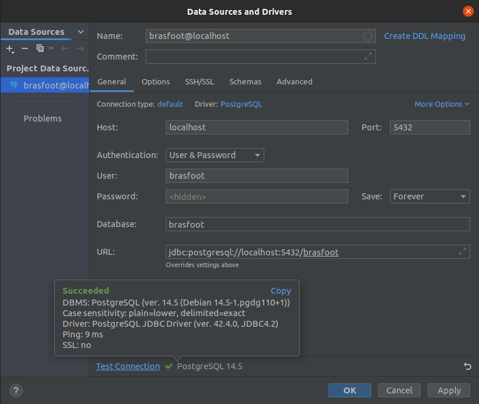
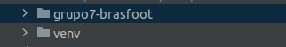

Instruções para executar o Brasfoot
| Data | Versão | Descrição | Autor |
|---|---|---|---|
| 05/09/2022 | 0.1 | Criação do documento | Paulo Gontijo |
Pré-requisitos
O nosso app, Brasfoot, foi criado usando Docker, ou seja, de forma conteinerizada. Dessa forma, garante-se que, uma vez que o Docker e Docker-compose for instalado corretamente em qualquer máquina, a aplicação também funcionará. Portanto, os pré-requisitos para executar o aplicativo são o Docker e o Docker-compose. Segue o link de instalação oficial dos mesmos:
Executar a infraestrutura de ambiente
Uma vez finalizada as devidas intalações mencionadas acima, estamos prontos para executar o app Brasfoot, de forma simples e fácil. Vá ao diretório grupo7-brasfoot/app/ e execute o comando a seguir:
docker compose up
Para inicializar o aplicativo do ponto partida default, deve-se verificar a existência de containers associados e, executar uma limpeza nos volumes dos mesmos. Para tal, execute o comando:
docker compose down --volumes
Em seguida:
docker compose up --remove-orphans --build --always-recreate-deps
Conectar ao Banco de Dados
Ao executar o comando docker compose up, a aplicação ficará disponível na porta 5432 do seu computador, ou seja, no localhost. Com isso, é possível se conectar com o banco de dados através de um sistema gerenciador de bancos de dados (SGBD) de sua preferência. No nosso exemplo foi usado uma feature do PyCharm, mas existem diversos outros. A interafce de SGBD oficial do Postgres é o pgAdmin 4, você pode instalá-lo facilmente por este link aqui.
Os parâmetros de conexão com o banco são mostrados a seguir:
- Host: localhost (0.0.0.0)
- Porta: 5432
- Método de autenticação: Usuário e senha
- Usuário: brasfoot
- Senha: brasfoot
- Database: brasfoot

Figura 1: Exemplo conexão com Postgres
Executar o APP
A partir deste ponto, já é possível executar a CLI (command line interface) da aplicação. Para tal, você deve ter a linguagem Python (versão 3.8+) instalada em sua máquina. Uma vez validado esse pré-requisito, navegue até a pasta raiz do projeto para criar um ambiente virutal. O seguinte comando ilustra o processo:
python3 -m venv venv
A figura a seguir exemplifica o resultado esperado da estrutura de pastas

Figura 2: Exemplo estrutura de pastas
Após isso, devemos ativar o ambiente virtual, para que todas as instalações sejam feitas sem interferir no sistema globa de sua máquina. Para tal, siga o comando a seguir:
source venv/bin/activate
Navegue até o diretório grupo7-brasfoot/app/backend e execute o seguinte comando:
pip install -r requirements.txt
Em seguida, execute o seguinte comando:
python3 main.py
Pronto, siga as instruções contidas na CLI e aproveite o jogo!